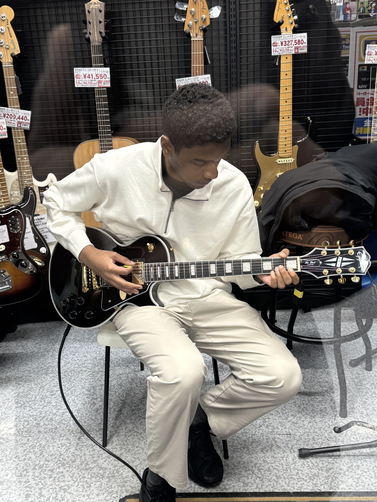

Nazario Osman Taquidir Junior
ナザリオ オスマン タキディール ジュニア

自己紹介
私はモザンビーク出身の20歳で、フルスタックデベロッパーを目指しています。テクノロジーへの興味は、父から贈られたPSPで初めて触れた幼い頃から始まり、それ以降、いかなる形でもテクノロジーに興味を持ち続けています。実際のコーディングの初めての経験は、2018/19年に当時の中学でありました。 その時点まで、私はテクノロジーの世界の中で部門ごとの違いをまだ知りませんでした。その時点では、私の最も知識のある分野は純粋な理論やデバイスのトラブルシューティングに関連していました。
趣味と活動
- ギター
- ピアノ
- 歌歌う
- 映像制作
- ゲーミング
- Sci-fi映画